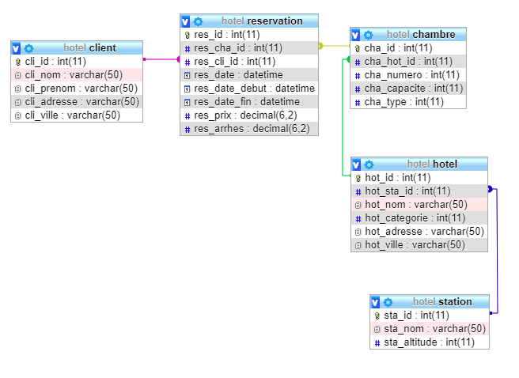

La base hotel
Le script de création de la base hotel permet de reproduire la base ci-dessous avec le jeu de données.

Ecrivez les requêtes suivantes:
Lot 1 SELECT - FROM - WHERE - AND
1 - Afficher la liste des hôtels. Le résultat doit faire apparaître le nom de l’hôtel et la ville
2 - Afficher la ville de résidence de Mr White Le résultat doit faire apparaître le nom, le prénom, et l'adresse du client
3 - Afficher la liste des stations dont l’altitude < 1000 Le résultat doit faire apparaître le nom de la station et l'altitude
4 - Afficher la liste des chambres ayant une capacité > 1 Le résultat doit faire apparaître le numéro de la chambre ainsi que la capacité
5 - Afficher les clients n’habitant pas à Londre Le résultat doit faire apparaître le nom du client et la ville
6 - Afficher la liste des hôtels située sur la ville de Bretou et possédant une catégorie>3 Le résultat doit faire apparaître le nom de l'hôtel, ville et la catégorie
Lot 2 JOIN
7 - Afficher la liste des hôtels avec leur station Le résultat doit faire apparaître le nom de la station, le nom de l’hôtel, la catégorie, la ville
8 - Afficher la liste des chambres et leur hôtel Le résultat doit faire apparaître le nom de l’hôtel, la catégorie, la ville, le numéro de la chambre
9 - Afficher la liste des chambres de plus d'une place dans des hôtels situés sur la ville de Bretou Le résultat doit faire apparaître le nom de l’hôtel, la catégorie, la ville, le numéro de la chambre et sa capacité
10 - Afficher la liste des réservations avec le nom des clients Le résultat doit faire apparaître le nom du client, le nom de l’hôtel, la date de réservation
11 - Afficher la liste des chambres avec le nom de l’hôtel et le nom de la station Le résultat doit faire apparaître le nom de la station, le nom de l’hôtel, le numéro de la chambre et sa capacité
12 - Afficher les réservations avec le nom du client et le nom de l’hôtel AVEC datediff
Le résultat doit faire apparaître le nom du client, le nom de l’hôtel, la date de début du séjour et la durée du séjour
Lot 3
13 - Compter le nombre d’hôtel par station
14 - Compter le nombre de chambre par station
15 - Compter le nombre de chambre par station ayant une capacité > 1
16 - Afficher la liste des hôtels pour lesquels Mr Squire a effectué une réservation
17 - Afficher la durée moyenne des réservations par station

SELECT - FROM - WHERE - ANDJOIN